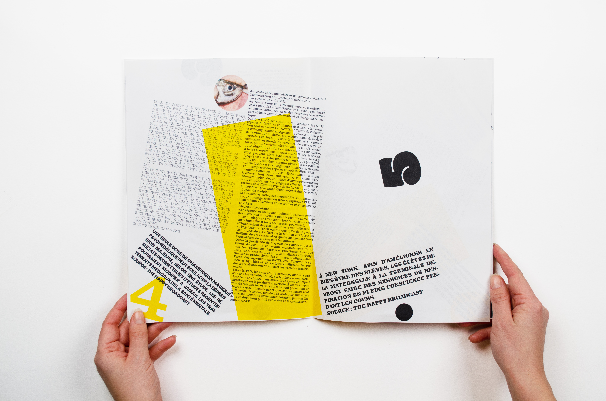
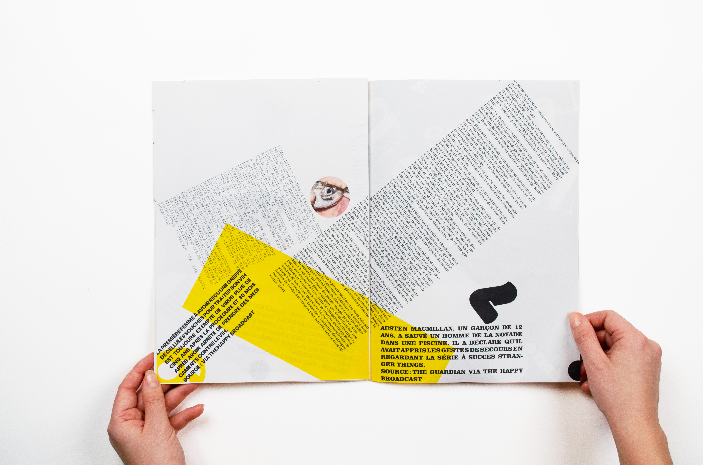
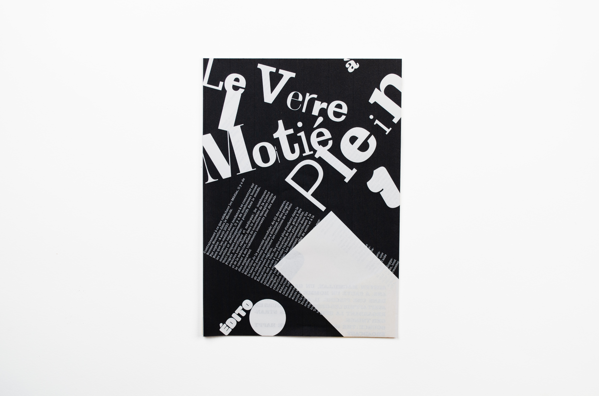
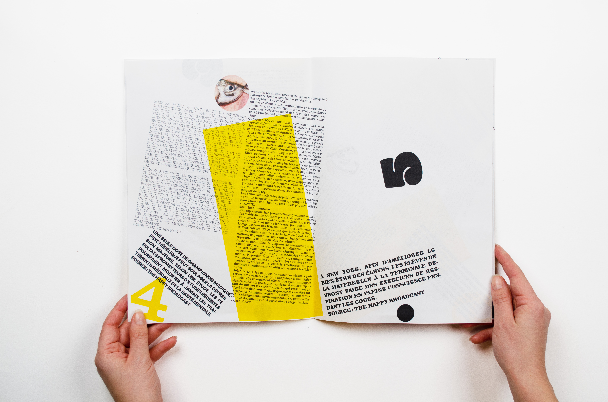
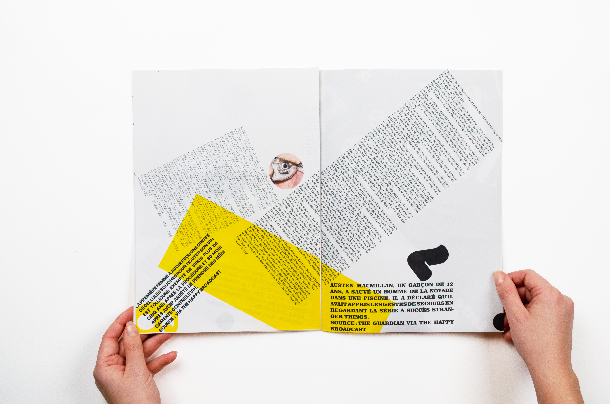
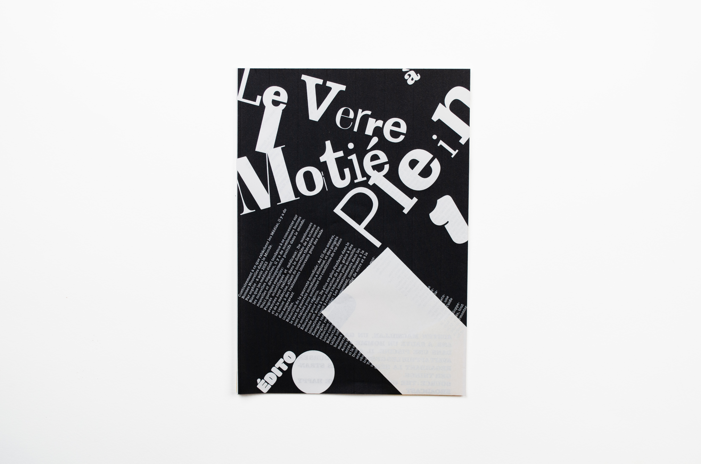

Le Verre à Moitié Plein | workshop
[2024]
Le Média Positif, un média numérique alternatif relayant exclusivement des bonnes nouvelles, a souhaité développer la ligne graphique de son nouveau journal intitulé Le Verre à Moitié Plein, imprimé et accessible en kiosque.
La conception éditoriale s’est principalement axée sur la notion de désordre, de mouvement et de jeu. Le parti-pris ici est une référence forte à l’esthétique dadaïste du début XXe.
Vidéo conçue à l’occasion d’un workshop sur l’animation After Effect encadré par Mélody Da Fonseca, une directrice artistique et graphiste spécialisée dans le motion design, l'illustration & le mapping vidéo.
Typographies utilisées : 00 Wagram Slab et 00 Hypercube Display de DBLZR, Clarendon de Robert Besley
Photographies de Kevin Meredith et Candace Karch
 




